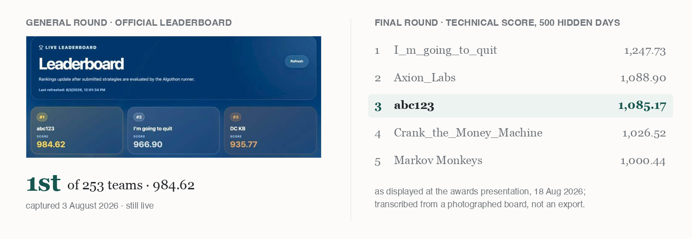

Yiping Yin
Quantitative research and trading · UNSW Sydney
I work on systematic trading and AI-driven quantitative research, and I care about one unglamorous thing above all: the effective sample is smaller than it looks. So I price selection luck before believing a backtest, and ship the simplest thing that survives falsification.
Graduating from UNSW Sydney in August 2026, based in Sydney, and looking for graduate and intern roles in quantitative research and trading.

Selected work
A lead–lag pair portfolio with every threshold fixed before candidates were compared. Seven near-relatives scored higher during development; none cleared the +166-point price of having looked, so none were submitted. What shipped was the simplest version — and out of sample it landed inside the noise band the analysis had priced for it.
Trade-aligned L2 reconstruction from nanosecond ASX/Cboe prints under strictly-prior-timestamp matching, then cost-aware, chronologically split simulation to separate signal from execution assumptions.
Inventory-aware two-sided quoting with EWMA-volatility thresholds, self-trade protection, covariance risk gating and automatic flattening — sessions end flat by design rather than by luck.
Point-in-time panels across 50 equities, 10 cryptocurrencies and 149,683 headlines, aligned to publication time so that out-of-sample research cannot quietly consume the future.
A public agent-network dataset of roughly 1.5M posts, and game-theoretic experiments that separate autonomous strategy from prompting and scripted automation.
Recent
- Aug 20263rd in the Algothon 2026 Final round — the out-of-sample score landed within 0.4 standard errors of what we had predicted before submitting.
- Aug 2026Published the full research record: every constant derived before touching data, every claim graded by evidence class.
- Jul 2026Completed the UNSW FAIC AI-engineering training — RAG, LangGraph, MCP, and a 4-bit QLoRA adaptation of Llama-3.1-Nemotron-Nano-8B.
Education and awards
UNSW Sydney — Bachelor of Commerce (Finance), 2023 – 2026.
UNSW International Student Award, 20% tuition.
Peter Farrell Cup 2026 finalist and Antler Australia AUS16, with PittsAI —
a multi-agent customer simulation I founded.
Tools
Python, pandas, NumPy, scikit-learn, SQL, FastAPI · RAG, LangGraph, QLoRA, MCP